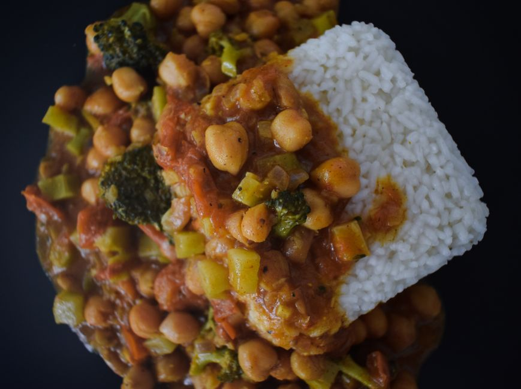

ingredientes esenciales para preparar comidas económicas y nutritivas

Photo: Anca / Pexels
Un presupuesto ajustado no impide comer bien. Estos son los ingredientes básicos con mejor relación calidad-precio para componer comidas equilibradas.
Cereales y féculas
El arroz, la pasta, las patatas, la avena y el pan integral son baratos, saciantes y duran mucho. Las versiones integrales aportan más fibra.
Legumbres
Lentejas, garbanzos y alubias, secos o en conserva, son una fuente asequible de proteínas y fibra. Las legumbres secas cuestan menos, pero requieren remojo y una cocción completa. Enjuaga las de conserva antes de usarlas.
Huevos
El huevo es una fuente de proteínas económica. Cuécelo bien: duro hasta que quede firme por dentro y, fritos o revueltos, hasta que la clara y la yema estén firmes. Evita las preparaciones con huevo crudo o poco cocido, sobre todo si estás embarazada o tienes las defensas bajas.
Verduras y fruta
Las verduras de temporada, las raíces (zanahorias, patatas, cebollas) y las verduras congeladas son baratas y conservan bien sus nutrientes. El tomate en conserva es muy útil para salsas y sopas.
Lácteos y alternativas
El yogur natural, la leche y el queso aportan calcio y proteínas. Compara los precios por unidad, no el precio del envase.
Carnes y pescados
Los muslos de pollo, el atún en lata y el pescado congelado suelen ser más baratos que otras carnes. Cuece el pollo hasta 74 °C en la parte más gruesa.
Especias y hierbas
Unas pocas especias (comino, pimentón, curry) y hierbas secas dan sabor a los platos con poco gasto.
Un día de ejemplo
Avena con fruta por la mañana; arroz, lentejas y verduras al mediodía; tortilla y ensalada o pasta con verduras por la noche. Si tienes alergias, necesidades de salud particulares o estás embarazada, pide consejo a un profesional de la salud.